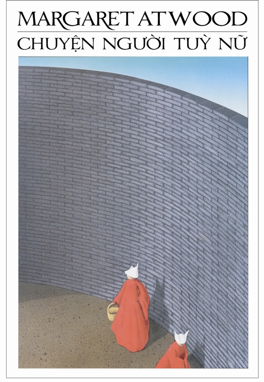

« Back
Chuyện Người Tùy Nữ
By Margaret Atwood

Giới Thiệu
I – Đêm
II – Mua Sắm
III - Đêm
IV - Phòng Đợi
V - Chợp Mắt
VI - Gia Hộ
VII - Đêm
VIII - Ngày Sinh
IX - Đêm
X - Quyển Hồn
XI - Đêm
XII - Cung Jezebel
XIII - Đêm
XIV - Cứu Chuộc
XV - Đêm
Chú Dẫn Lịch Sử Về Chuyện Người Tùy Nữ